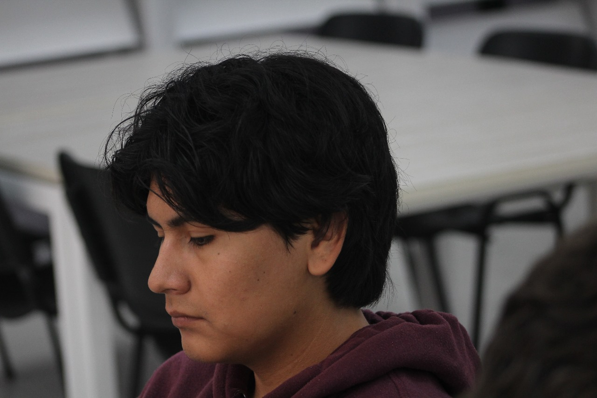

Sergio Vironche
Summary
My name is Sergio Alejandro Vironche Alvarezam from Mexico, I was born in Tepic, Nayarit on September 12, 2005. I am a student at the Polytechnic University of the State of Nayarit. I am a calm, responsible, and focused person to carry out my work or responsibilities with the highest possible quality.